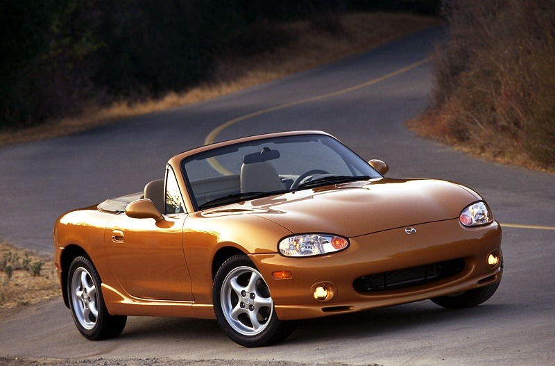

The first generation mazda miata debuted in the United States in 1989 with the na generation.
These model years are known for their round soft edged body lines and round popup headlights.

The second generation mazda miata was introduced in 1998 with chasis code designation nb.
The most notable change on this model was the fixed headlight design due to the popup headlights
not meeting updated pedestrian crash safety standards.